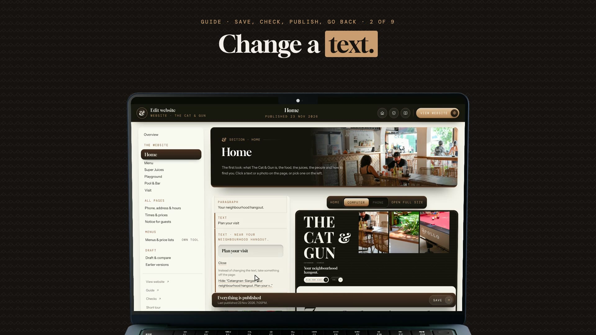

Academy · Room 01 · Start here · A1
The control panel
Every tool of The Cat & Gun opens from the control panel. The video shows the seven windows, the visits of today, the bar at the top and the section of each tool.
Chapter 1 of 7 · This is your control panel.
In this video
What the video shows
Every chapter with the sentence from the video. A click on the time plays the video from there.
- 01This is your control panel.
- 02One window per tool.
- 03Today on the website.
- 04Back to the top.
- 05Each tool has a section.
- 06How it works.
- 07All pieces and the website.
Up next
Next guide: Save, check, publish, go back
The guides follow the order of the rooms.

A20:47
Save, check, publish, go back
The bar at the bottom, Save, Undo, Before and after, Publish with a note and Earlier versions. Edit website, Menus & price lists, Brand book editor and Sticker editor use the same bar.
9 chaptersWatch the guide →

Room 01
Back to Start here
The room with this guide, the animation that shows how it works, the recommendation for use and the learnings.
Start hereEnter the room →